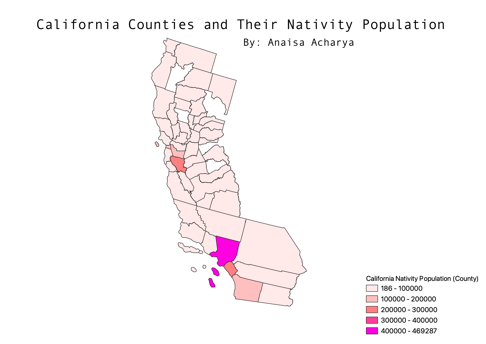

HW 6
This map focuses on the nativity in California, specifically individuals who are completely native to an Asian country.
The data utilized is from 2015. As you can see a large part of California has few native born people.
It is important to note that the counties not filled were null data.

Homework 6: CSV File
Homework 6: Geojson File